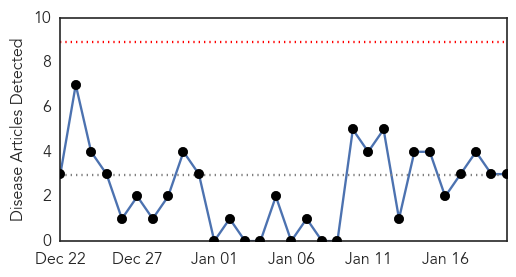
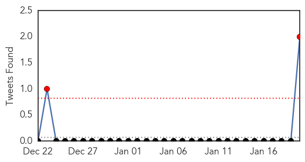
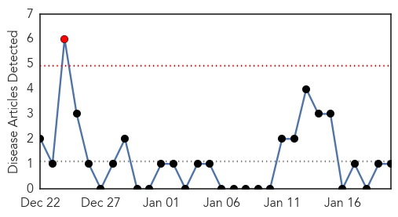
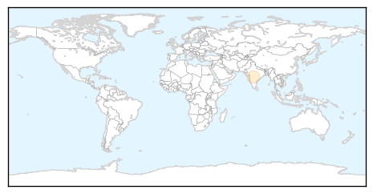

Dengue Fever
30-Day Web Trend
0 alerts, 0 warnings

30-Day Twitter Trend
2 alerts, 0 warnings

Article Locations

Article Confidences

Top Articles:
Top Tweets:
- 0.734
- Flavivirus news: Dengue fever outbreak spreads in Cairns - Brisbane Times: Dengue fever outbrea... http://t.co/pl2inAMXks pathogenposse
- 0.734
- Flavivirus news: Dengue fever outbreak spreads in Cairns - Brisbane Times: Dengue fever outbrea... http://t.co/MZXtAP3UL0 pathogenposse
- 0.568
- Flavivirus news: A very personal perspective on Dengue fever - Medical Xpress: Medical XpressA ... http://t.co/sEhXzM2d5R pathogenposse
Hepatitis
30-Day Web Trend
1 alerts, 0 warnings

30-Day Twitter Trend
0 alerts, 0 warnings

Article Locations
Article Confidences

Top Articles:
Top Tweets:
-
No tweets found for Jan 20, 2015